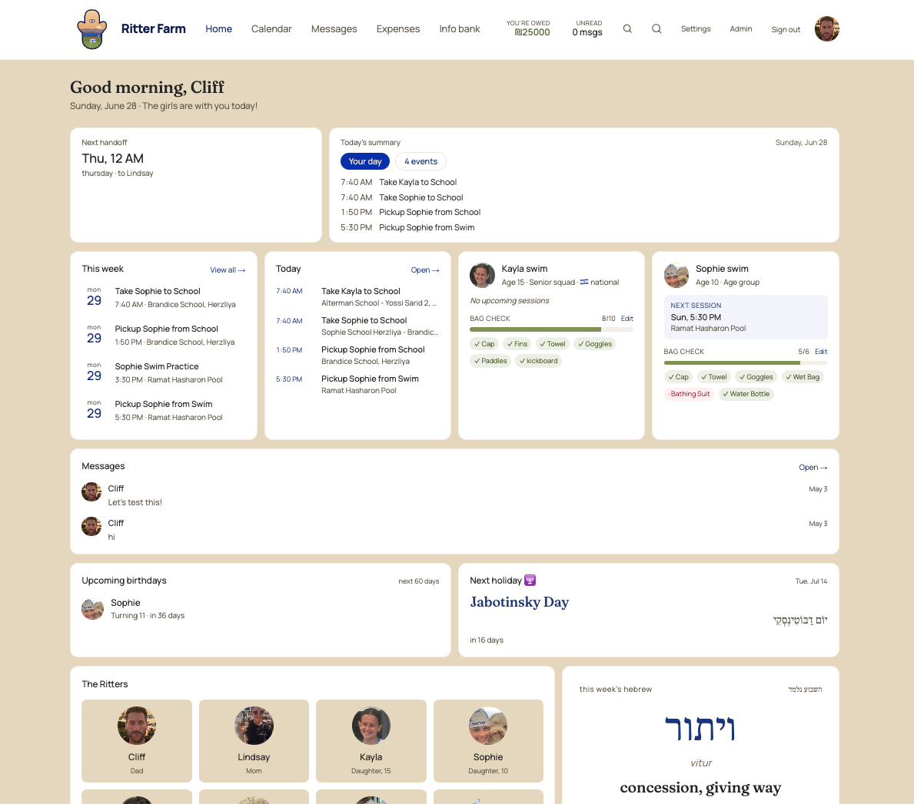

A co-parenting app for divorced and separated families: one shared, neutral source of truth with chat, scheduling, expenses, and a custom AI agent to smooth the day-to-day.

Co-parenting across two households runs on scattered texts, mismatched calendars, and money owed back and forth — friction that's stressful for parents and kids alike. The need: one neutral place both sides trust, where the schedule, the messages, and the expenses all agree.
A family HQ for separated and divorced parents. It brings together a built-in chat, a shared schedule and calendar, an expenses ledger with reimbursements, an info bank for documents and contacts, and a custom AI agent that helps coordinate handoffs, reminders, and the small logistics that usually cause friction.
Both parents (and the kids' info) live in one workspace. The calendar shows handoffs and activities; the expenses tab tracks who paid what and who owes whom; chat keeps communication in one civil, on-record place; and the AI agent surfaces what's coming up and nudges the routine along. Everything is one source of truth, accessible to both sides.
The same HQ thinking that powers our trading dashboards, applied to family life — less back-and-forth, fewer dropped balls, and a calmer shared system. Proof that the model fits any operator who needs their world on one screen.
One source of truth, built around how you actually operate.
Book My Discovery Call